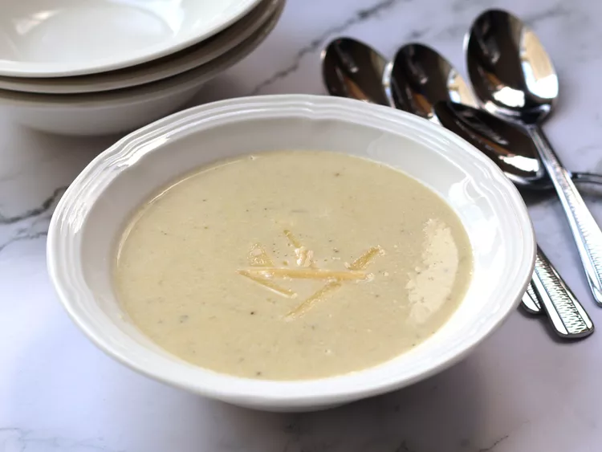

Artichoke Parmesan Soup

Description
This artichoke Parmesan soup, a tangy, comforting delight,
is made with tender artichoke hearts and savory Parmesan
cheese. It's perfect for a cozy night in or a quick,
delicious meal.
Ingredients
- 1 tablespoon olive oil
- 1 onion, chopped
- 2 (14 ounce) cans quartered artichoke hearts,
drained and roughly chopped
- 2 cloves garlic, minced
- 1 teaspoon dried thyme
- 4 cups chicken broth
- 1/2 cup freshly grated Parmesan cheese
- 1 tablespoon lemon juice
- 1/2 cup heavy cream
- salt and freshly ground black pepper to taste
Steps
- Heat olive oil over medium heat in a large pot. Add
onion and cook and stir until softened, about
5 minutes. Add artichoke hearts, garlic, and thyme,
and cook for another 2 to 3 minutes. Pour in chicken
broth and bring to a simmer. Cook, uncovered, for about
10 minutes.
- Stir in Parmesan cheese and lemon juice. Using an
immersion blender, carefully blend the soup until
smooth. Alternatively, you can transfer the soup to
a blender and blend in batches, then return it to the
pot. Discard any fibrous artichoke pieces that remain
stuck to the blades, or strain for a smoother soup.
- Stir in heavy cream; season with salt and pepper.
Simmer, stirring occasionally, until soup is heated
through and flavors have melded together, another 4 to
5 minutes. Garnish with extra Parmesan cheese.